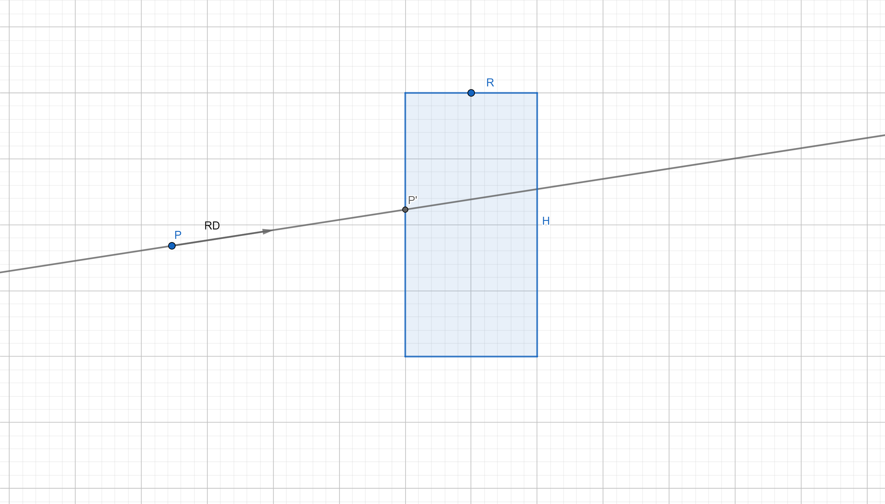
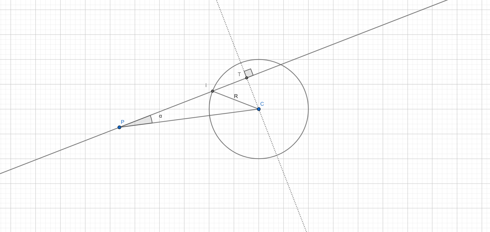
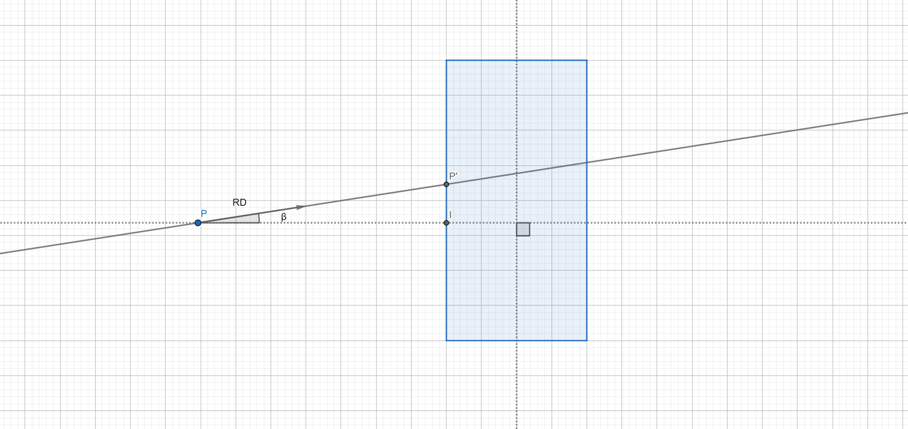
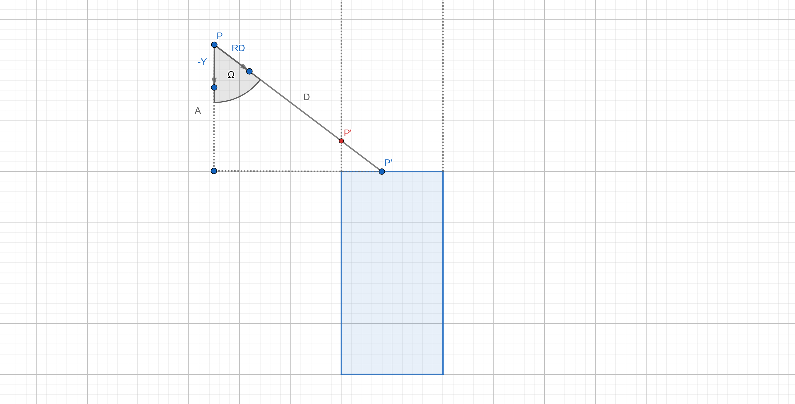

Ray-Cylinder intersection
For a given cylinder with radius $R$ and height $H$, a ray with origin $P$ and direction $RD$, find the first intersection point $P'$ between the ray and the cylinder.

First, I will simplify the problem by flatening the ray (so effectively this becomes a 2D problem). You can understand this as trying to figure out the intersection point between the ray and a slice of the cylinder.

$C$ is the slice center: $(Cylinder_x, P_y, Cylinder_z)$
$R$ is the radius of the cylinder.
$I$ is the intersection with this slice.
$\alpha$ is the angle between $RD$ and $CP$.
$T$ is a special point that makes the right triangles $TCP$ and $TCI$.
Finding the length of $PI$ will give us the point I ($I=P+\hat{RD}\cdot||PI||$). However, we don't know that distance yet! Note that $||IP|| = ||TP|| - ||TI||$, so if we can figure out this two lengths, we can solve point $I$! First I want to find $||TC||$ as this is a common side of the two right triangles: $TCP$ and $TCI$. There are two methods of figuring it out:
Method A:
$RD_f = (RD_x,0,RD_z)$
$c = \hat{RD_f} \cdot \hat{CP}$
$\alpha = \arccos c$
$\sin \alpha = \frac{||TC||}{||CP||}$
$||TC|| = \sin \alpha \cdot ||CP||$
Method B:
$||TP|| = CP \cdot \hat{RD_f}$
$||CP||^2 = ||TC||^2 + ||TP||^2$
$||TC|| = \sqrt{||CP||^2 - ||TP||^2}$
Method A is quite simple to understand, we just use simple trig to find the angle and then resolve for $||TC||$. Method B takes advantage of vector projection to figure out $||TP||$ and then we solve for $||TC||$ with the pythagoras theorem. I will use Method B as we will re-use $||TP||$. Finally to get $||TI||$ we can do:
$R^2 = ||TC||^2 + ||TI||^2$
$||TI|| = \sqrt{R^2 - ||TC||^2}$
With this information, we can go back to the original representation of the problem:

We can represent the distance $||P’P||$ as:
$||IP|| = ||TP|| - ||TI||$
$\cos \beta == \hat{RD} \cdot \hat{CP}$
$\cos \beta = \frac{||IP||}{||P’P||}$
$||P’P|| = \frac{||IP||}{\cos \beta}$
$P’ = P + \hat{RD} \cdot ||P’P||$
And there we have it! An intersection point… Not really. Before wrapping this up we need to check for rays missing the cylinder and also take into account the cylinder caps. The first thing to note is that all of this must be done in cylinder local space (or some assumptions won’t work). We can start by discarding rays when $||TC|| > R$.
Before checking for the cylinder height, we are going to limit the ray direction y to be positve:

$|{P’}_y| > \frac{H}{2}$
$ A = |P_y| - \frac{H}{2}$
$Y_d = (0,-1,0) RD_y \leqslant 0$
$Y_d = (0,1,0) RD_y > 0$
$ \cos \omega = \hat{RD} \cdot Y_d$
$ \cos \omega = \frac{H}{D}$
$ D = \frac{H}{\cos \omega}$
$ P’ = P + \hat{RD} \cdot D$
Finally, we need to check that $P’$ is within the cap:
$\sqrt{{P’}_x^2 + {P’}_z^2} > R \Rightarrow discard.$
And now we have an intersection point that takes into account the caps. I implemented the intersection code bellow using three.js:
Appendix:
In this implementation I’m not taking into account rays starting inside the cylinder. Also, this could be extended to provide the second intersection point.